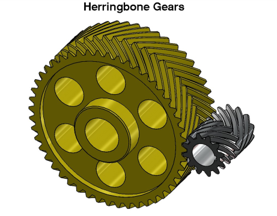

Este tipo de engranaje tiene las siguientes características:
•No presenta ningún empuje lateral sobre su soporte, en ninguno de los dos sentidos de giro. Los engranajes helicoidales normales hacen aparecer empujes en el eje de giro donde están colocados, debido al empuje en cada diente. La dirección de esta fuerza de empuje depende de la dirección de giro del engranaje. Esto es debido a que cada una de las dos partes de cada diente empuja en sentido contrario al de la otra . Esto elimina la necesidad de que los cojinetes tengan que soportar ningún esfuerzo lateral.
•La transmisión de potencia entre engranajes es más suave que en el caso de los helicoidales, debido a que existe mas superficie de contacto entre los dientes, y "entran" (se engranan) más suavemente.
•Tienen una mayor capacidad de carga.
•Sin embargo son mas difíciles de fabricar, por la complejidad adicional de la forma en V
•